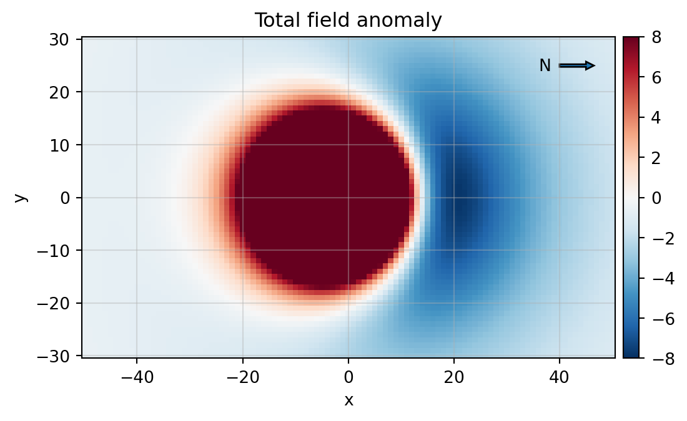
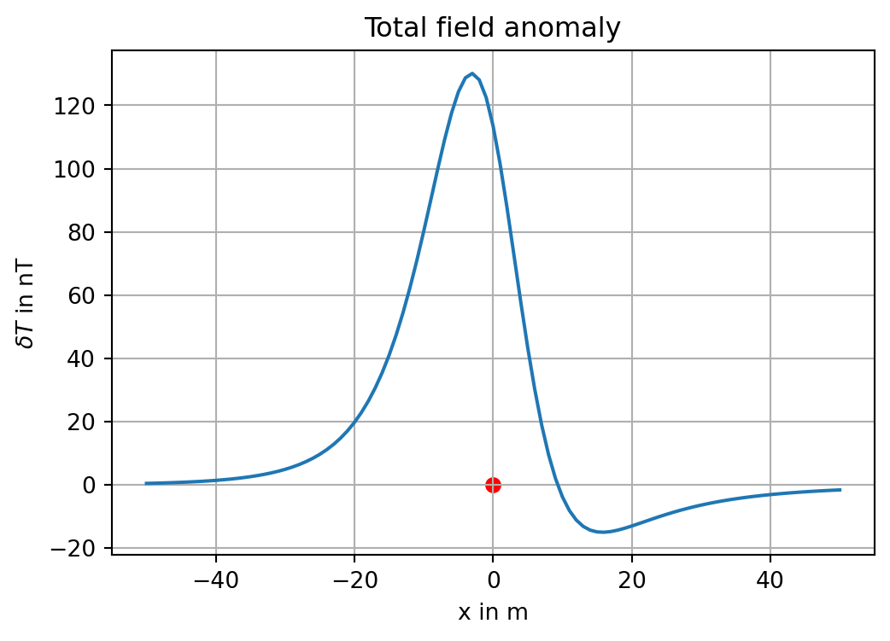

Show the code
import numpy as np
import matplotlib.pyplot as plt
from sympy import *The magnetic field \(\mathbf{B}\) is curl-free outside the source distribution \[ \nabla \times \mathbf{B} = \mathbf{0} \] and has a potential \[ \mathbf{H} = - \nabla \Psi. \]
The potential \(\Psi\) satisfies the Laplace equation \[ \Delta \Psi = 0 \] since it holds \(\nabla \cdot \mathbf{B} = 0\).
Induction: \[ \mathbf{B} = \mu_{r} \mu_{0} \mathbf{H} = \mu_{0}(\mathbf{H} + \mathbf{M}) = \mu_{0}\mathbf{H} + \mathbf{J} \] where \(\mathbf{J}\) is the magnetic polarization.
Potential: \[ \begin{align} \Psi(\mathbf{r}) & = -\frac{1}{4 \pi} \mathbf{m} \cdot \nabla \frac{1}{| \mathbf{r} - \mathbf{r'}|} \\ & = \frac{1}{4 \pi} \mathbf{m} \cdot \frac{\mathbf{r} - \mathbf{r'}}{| \mathbf{r} - \mathbf{r'}|^{3}}. \end{align} \]
If \(\mathbf{m} = (0, 0, m)^\top\) and \(\mathbf{r'} = (0, 0, 0)^\top\), we refer to a vertical magnetic dipole at the origin. Then, with \(r = |\mathbf{r}|\): \[ \Psi(\mathbf{r}) = \frac{m}{4 \pi} \frac{z}{r^{3}} = \frac{m}{4 \pi} \frac{\cos \theta}{r^{2}}. \]
The magnetic field is given by: \[ \begin{align} \mathbf{H} & = - \nabla \Psi \\ & = -\frac{m}{4 \pi} \left( \hat{\mathbf{r}} \frac{\partial}{\partial r} + \frac{1}{r} \hat{\theta} \frac{\partial}{\partial \theta} + \frac{1}{r \sin \theta} \hat{\phi} \frac{\partial}{\partial \phi} \right) \frac{\cos \theta}{r^{2}} \\ & = +\frac{m}{4 \pi} \left( \hat{\mathbf{r}} \frac{2 \cos \theta}{r^{3}} + \hat{\theta} \frac{\sin \theta}{r^{3}} \right) \\ & = (H_{r}, H_{\theta}, 0)^\top. \end{align} \]
The magnitude of the field is: \[ H = \sqrt{H_{r}^{2} + H_{\theta}^{2}} = \frac{m}{4 \pi r^{3}} \sqrt{1 + 3 \cos^{2} \theta}. \]
The field strength decreases as \(r^{-3}\), and the field direction depends on the angle \(\theta\).
The magnitude of the field along the dipole axis is twice as large as that in the equatorial plane. At \(\theta = 0\) and \(\theta = \frac{\pi}{2}\), one of the components of \(\mathbf{H}\) vanishes. These positions are known as the Gauss first and second principal axes, respectively.
Dipole density: Magnetization corresponds to the density of dipole moments: \[ \mathbf{m} = \int_{V} \mathbf{M} \, \mathrm{d}{^3\vb r}. \]
Substituting the dipole moment into the potential equation gives: \[ \Psi(\mathbf{r}) = -\frac{1}{4 \pi} \int \mathbf{M} \cdot \nabla \frac{1}{|\mathbf{r} - \mathbf{r'}|} \, \mathrm{d}{^3\vb r}. \]
For homogeneous magnetization: \[ \Psi(\mathbf{r}) = -\frac{1}{4 \pi} \mathbf{M} \cdot \nabla \int \frac{1}{|\mathbf{r} - \mathbf{r'}|} \, \mathrm{d}{^3\vb r}. \]
We depart from the magnetic potential \(\Psi\) \[ \Psi(\vb{r}) = -\frac{1}{4 \pi} \grad \cdot \int \vb{M} \frac{1}{|\vb{ r}|} \, \dd {^3\vb r}. \] In the case of a homogeneous magnetization we write \[ \Psi(\vb{r}) = -\frac{1}{4 \pi} \vb{M} \cdot \grad \int \frac{1}{|\vb{ r}|} \, \dd {^3\vb r} \] Recall the gravitational potential \[ V(\vb{r}) = f \rho \int \frac{1}{|\vb{r}|} \, \dd {^3\vb r} \] which we insert into the magnetic dipole potential to obtain \[ \Psi(\vb{r}) = -\frac{1}{4 \pi} \frac{\vb{M}}{f \rho} \cdot \grad V(\vb{r}). \] This is the Poisson formula. In a Cartesian coordinate system we write for the partial derivatives \[ V_{x} = \frac{ \partial V (\vb r)}{ \partial x} \text{ etc.} \] and \[ \vb{M} = (M_{1}, M_{2}, M_{3})^\top. \] Now, with \[ \Psi(\vb r) = -\frac{1}{4 \pi f \rho}(M_{1}V_{x}(\vb r) + M_{2}V_{y}(\vb r) + M_{3}V_{z}(\vb r)) \]
and \[ \vb{B}(\vb r) = -\mu_{0}\grad \Psi(\vb r) \] we obtain \[ \begin{align} B_{x}(\vb r) &= \frac{\mu_{0}}{4 \pi f \rho} (M_{1}V_{xx}(\vb r) + M_{2}V_{yx}(\vb r) + M_{3}V_{zx}(\vb r)) \\ B_{y}(\vb r) &= \frac{\mu_{0}}{4 \pi f \rho} (M_{1}V_{xy}(\vb r) + M_{2}V_{yy}(\vb r) + M_{3}V_{zy}(\vb r)) \\ B_{z}(\vb r) &= \frac{\mu_{0}}{4 \pi f \rho} (M_{1}V_{xz}(\vb r) + M_{2}V_{yz}(\vb r) + M_{3}V_{zz}(\vb r)) \end{align} \] We introduce the Poisson-Eötvös tensor \[ \tilde{G} = \tilde{G}(\vb r) = \frac{\mu_{0}}{4 \pi f \rho} \begin{pmatrix} V_{x x} & V_{xy} & V_{xz} \\ V_{y x} & V_{yy} & V_{yz} \\ V_{z x} & V_{zy} & V_{zz} \end{pmatrix} \] and get \[ \vb{B} = \tilde{G} \vb{M}. \] It is therefore possible to calculate the components of the magnetic anomaly of a body with homogeneous magnetization by providing the second-order partial derivatives of the gravitational potential of the same body with assumed homogeneous mass density.
import numpy as np
import matplotlib.pyplot as plt
from sympy import *For the dipole field of a magnetized sphere at position \(\mathbf{r'}\) with dipole moment \(\mathbf{m}\): \[ \mathbf{B}(\mathbf{r}) = \frac{\mu_{0}}{4 \pi R^5} \left( 3 (\mathbf{m}^\top (\mathbf{r} - \mathbf{r'})) (\mathbf{r} - \mathbf{r'}) - \mathbf{m} R^2 \right). \]
SymPym_x, m_y, m_z, x, y, z, mu = symbols('m_x m_y m_z x y z mu_0', real=True)
r = symbols('r', positive=True)
m = Matrix([m_x, m_y, m_z])
V = -mu / 4 / pi * m.dot([diff(1 / sqrt(x**2 + y**2 + z**2), q) for q in [x,y,z]])
V\(\displaystyle - \frac{\mu_{0} \left(- \frac{m_{x} x}{\left(x^{2} + y^{2} + z^{2}\right)^{\frac{3}{2}}} - \frac{m_{y} y}{\left(x^{2} + y^{2} + z^{2}\right)^{\frac{3}{2}}} - \frac{m_{z} z}{\left(x^{2} + y^{2} + z^{2}\right)^{\frac{3}{2}}}\right)}{4 \pi}\)
The field can be obtained by taking the negative gradient of the potential:
B = [-diff(V, p) for p in [x,y,z]]
simplify(Matrix([B[0], B[1], B[2]])).subs(x**2+y**2+z**2, r**2)\(\displaystyle \left[\begin{matrix}\frac{\mu_{0} \left(- m_{x} r^{2} + 3 x \left(m_{x} x + m_{y} y + m_{z} z\right)\right)}{4 \pi r^{5}}\\\frac{\mu_{0} \left(- m_{y} r^{2} + 3 y \left(m_{x} x + m_{y} y + m_{z} z\right)\right)}{4 \pi r^{5}}\\\frac{\mu_{0} \left(- m_{z} r^{2} + 3 z \left(m_{x} x + m_{y} y + m_{z} z\right)\right)}{4 \pi r^{5}}\end{matrix}\right]\)
This result can be rewritten in compact form as \[ \mathbf{B}(\mathbf r)= \frac{\mu_0}{4 \pi r^3} \left(3({\mathbf{m}} \cdot {\hat{\mathbf{r}}}) {\hat{\mathbf{r}}}-{\mathbf{m}}\right) \] with the radial unit vector \[ \hat{\mathbf r} = \frac{\mathbf r}{r}, \quad r = |\mathbf r|. \]
The induced magnetization is caused by the magnetic field within the body: \[ \mathbf{M}_{i} = (\mu_{r} - 1) \mathbf{H} = \kappa \mathbf{H} = \frac{\kappa}{\mu_{0}} \mathbf{B}. \]
The susceptibility \(\kappa\) is obtained from the magnetic permeability: \[ \mu = \mu_{0} \mu_{r} = \mu_{0}(1 + \kappa), \] hence: \[ \kappa = \mu_{r} - 1. \]
The susceptibility is a dimensionless quantity, typically expressed in \(10^{-5}\) SI units.
The dipole moment of a sphere with radius \(a\) and susceptibility \(\kappa\) in the geomagnetic main field \(\mathbf{T_{0}}\) is: \[ \mathbf{m} = \frac{\kappa}{\mu_{0}} \mathbf{T_{0}} \frac{4 \pi}{3} a^{3}. \]
We consider a magnetized sphere of radius \(a=5\) m located at a depth of \(z=15\) m. The susceptibility is \(\kappa=0.126\) SI.
The magnetic main field is \(\vb T_0 = (18400, 0, 43500)^\top\) nT.
The magnetization is \[ \vb M = \frac{ \kappa }{ \mu_0} \vb T_0, \]
the equivalet dipole moment is \[ \vb m = \vb M \frac{ 4 \pi a^3 }{3 }. \]
We plot the total field anomaly
\[ \delta \vb T = \vb B \cdot \frac{ \vb T_0 }{| \vb T_0 | }, \] which is the projection of the anomaly \(\vb B\) onto the direction of the main field \(\vb T_0\).
We denote \(\vb T_a\) as the magnetic anomaly vector. Then the total field anomaly \(\delta T\) is given by
\[ \begin{align} \delta T & = |\mathbf{T}_{0} + \mathbf{T}_{a}| - | \mathbf{T}_{0} | \\ & = |\mathbf{T}_{0} + \mathbf{T}_{a}| - T_{0} \\ & = \sqrt{ (\mathbf{T}_{0} + \mathbf{T}_{a}) \cdot (\mathbf{T}_{0} + \mathbf{T}_{a}) } - T_{0} \\ & = \sqrt{ T_{0}^{2} + 2 \mathbf{T}_{0} \cdot \mathbf{T}_{a} + T_{a}^{2}} - T_{0}. \end{align} \]
For small anomalies with \(T_a \ll T_0\) we can expand the root in a series
\[ \begin{align} \delta T & \approx T_{0} \left( \sqrt{ 1 + 2\frac{\mathbf{T}_{a} \cdot \mathbf{T}_{0}}{T_{0}^{2}} } - 1\right) \\ & \approx T_{0} \left( 1 + \frac{\mathbf{T}_{a} \cdot \mathbf{T}_{0}}{T_{0}^{2}} - 1\right) \\ & = \mathbf{T}_{a} \cdot \frac{\mathbf{T}_{0}}{T_{0}}. \end{align} \] We see that the total feld anomaly is the projection of the anomaly vector onto the direction of the inducing field.
IIn the literature, the total field anomaly is often abbreviated as TMI anomaly (total magnetic field intensity anomaly).
import numpy as np
import matplotlib.pyplot as plt
from mpl_toolkits import axes_grid1
def add_colorbar(im, aspect=20, pad_fraction=0.5, **kwargs):
"""Add a vertical color bar to an image plot."""
divider = axes_grid1.make_axes_locatable(im.axes)
width = axes_grid1.axes_size.AxesY(im.axes, aspect=1./aspect)
pad = axes_grid1.axes_size.Fraction(pad_fraction, width)
current_ax = plt.gca()
cax = divider.append_axes("right", size=width, pad=pad)
plt.sca(current_ax)
return im.axes.figure.colorbar(im, cax=cax, **kwargs)
def dipole(r, rp, m):
mu = np.pi * 4e-7
R = np.linalg.norm(r - rp)
B = mu / (4 * np.pi * R**3) * (
3 * np.dot(r - rp, m) * (r - rp) / R**2 - m)
return B
T0 = np.array([18400, 0, 43500])
mu = np.pi * 4e-7
kappa = 0.126
M = T0 / mu * kappa
a = 5
depth = 15
vol = 4 * np.pi * a**3 / 3
x = np.arange(start=-50,stop=51)
y = np.arange(start=-30,stop=31)
bz = np.zeros([len(y), len(x)])
bt = np.zeros([len(y), len(x)])
for i, p in enumerate(x):
for j, q in enumerate(y):
B = dipole(np.array([p, q, 0]), np.array([0, 0, depth]), M * vol)
bz[j, i] = B[2]
bt[j, i] = B.dot(T0) / np.linalg.norm(T0)
fig, ax = plt.subplots(figsize=(6,4))
c = ax.pcolormesh(x, y, bz, cmap="RdBu_r", vmin=-8, vmax=8)
ax.grid(True, alpha=0.4)
xa, ya, arrow_length = 40, 25, 5
ax.arrow(x=xa, y=ya, dx=arrow_length, dy=0, width=0.5, head_length=1.5)
ax.annotate('N', xy=(xa-4,ya-1))
add_colorbar(c)
ax.set_aspect(1)
ax.set_title('Total field anomaly')
ax.set_xlabel('x')
ax.set_ylabel('y');
Profile along the \(x\)-axis:
Bt = bt[30, :]
fig, ax = plt.subplots(figsize=(6,4))
plt.plot(x, Bt)
plt.xlabel('x in m')
plt.ylabel(r'$\delta T$ in nT')
ax.set_title('Total field anomaly')
#circle = Circle((0.0, 0.0), 2.0)
#ax.add_patch(circle)
plt.grid(True)
plt.scatter([0], [0], color='r');
We recognize the minimum of the anomaly, which is characteristically shifted towards north for measurements in the mid-latitudes of the northern hemisphere.
More interesting examples can be generated by changing the components of the main field T0 in the code cell above.
The following two cases are of particular interest:
T0 = np.array([0, 0, Z0])T0 = np.array([X0, 0, 0])with X0, Z0 positive values given in nT.